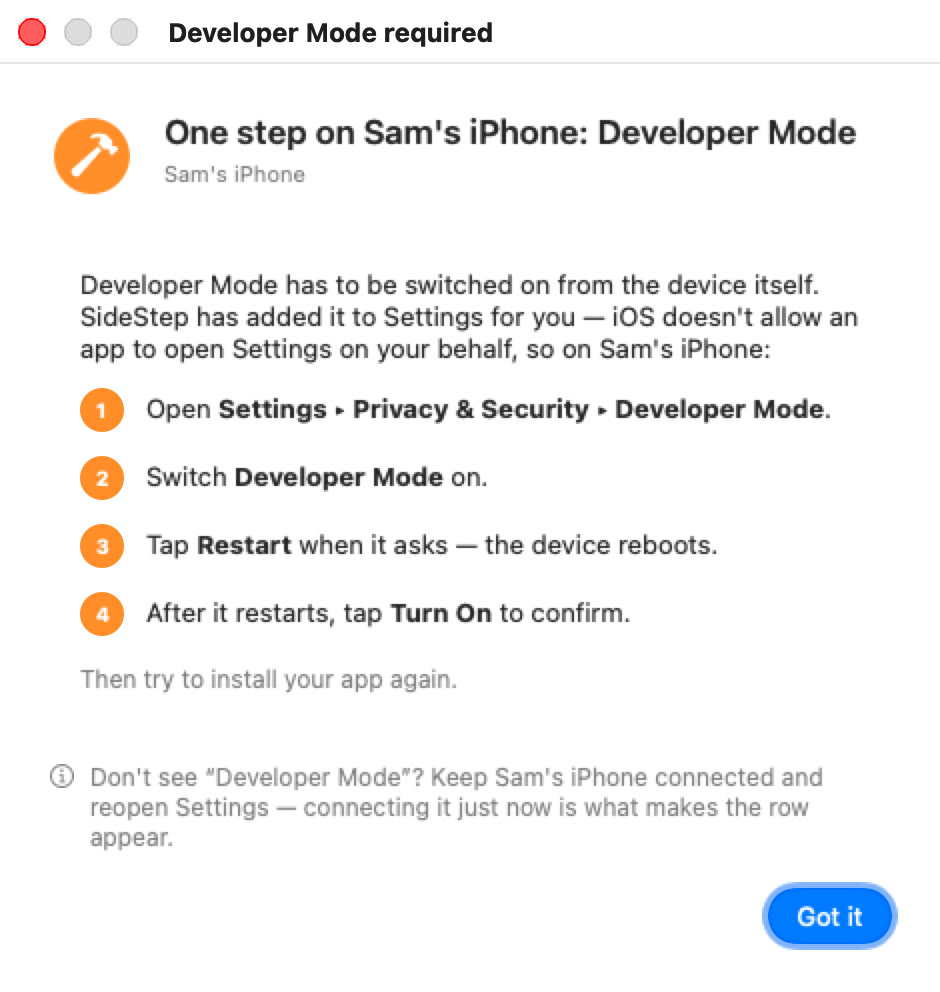
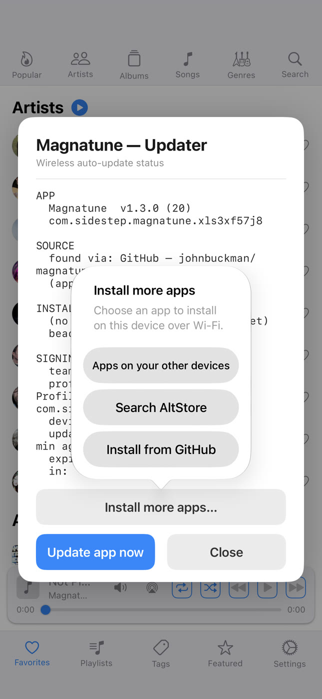
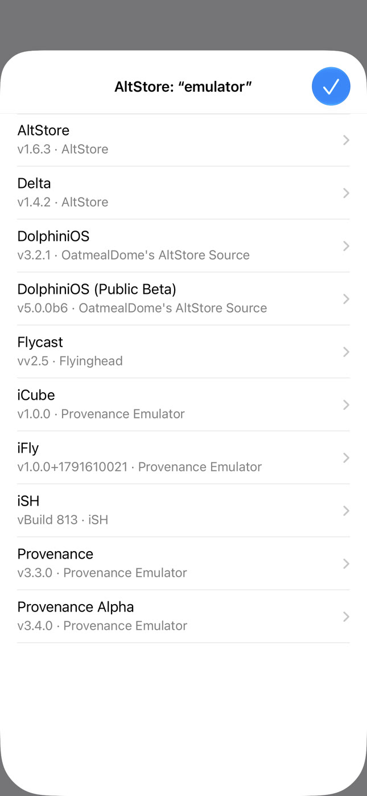

Install iPhone and iPad apps on your own devices.
No Apple approval needed.
A small, free Mac app that signs apps with your own Apple ID (a free one works) and keeps them signed and up to date by itself, over a cable or over Wi-Fi. No jailbreak, no special hardware.
A 3-minute tour of SideStep. Everything in it is in the guide.
What it's for
Android lets you install any app you like. SideStep makes that about as easy on an iPhone or iPad, using Apple's own developer signing.
Open-source apps, your own apps, and apps with features Apple tends to reject: extensions, skins, scripting.
Apps the App Store has dropped for older iPhones and iPads can still be installed and kept running.
When a developer publishes a new version, SideStep installs it on your devices within a day.
Your Apple ID, your Mac, your device. No SideStep account and no server: nothing is uploaded to anyone.
How it works
After that, adding apps takes a click, and keeping them working takes nothing at all.
A free one works: its apps last 7 days (SideStep renews them) and you can have 3 per device. A paid developer account signs them for a year.

Tap Trust, and turn on Developer Mode on iOS 16 and later. SideStep switches it on where it can and shows you the few taps it needs.

Search curated AltStore catalogs, install straight from a GitHub project, or open an .ipa file. Then trust your Apple ID on the device, once.

Then it looks after itself
Apple's free signatures last a week. As long as SideStep is running on your Mac, your apps never get there:

From the phone itself
Once one SideStep app is on your iPhone or iPad, tap Install more apps… in its status panel to add others over Wi-Fi: apps you have on your other devices, anything in the catalog, or any GitHub project.


For app developers
SideStep Wizard turns your GitHub project into a single file anyone can open. It installs the latest SideStep, walks them through setting up their iPhone, and installs your app. No Xcode and no developer account on their side. It also writes a ready-made button for your website, like this one:
If you already have SideStep, the button opens it straight to Magnatune (a music player). If not, it offers the Magnatune installer, which installs SideStep first and walks you through the setup.
Not for piracy
SideStep exists to install legitimate apps the App Store won't carry, and it works to stay that way.
Why I built it
I make espresso machines, and our software is written in Tcl/Tk, a language the App Store won't accept. SideStep is how it reaches customers' iPads and stays up to date without asking anyone to plug into a Mac each week. It works just as well for any app you want on your own device. — John Buckman